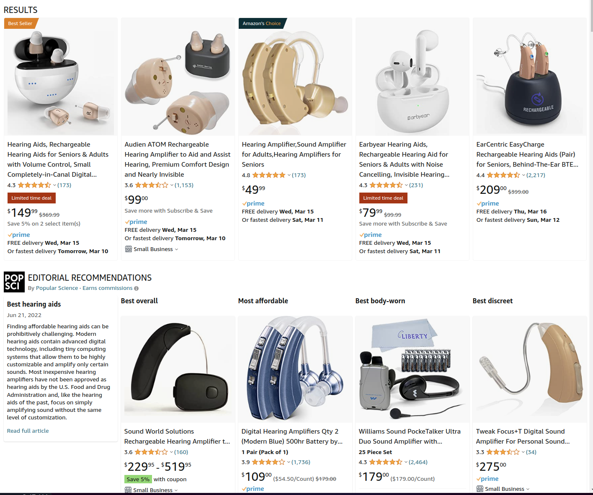

# Hearing Aids ### Will Styler - LIGN 113 --- ### Today's Plan - What does a hearing aid do? - Signal Processing in Hearing Aids - Hearing aid types - Hearing aid fitting - When don't hearing aids work? - Addressing lingering questions from the course so far --- ## CAPEs --- ## What does a hearing aid do? --- ### Hearing Aids amplify the input signal! - It can be uniform throughout the frequency domain, or targeted - A microphone picks up on the signal - It's converted to digital form and processed - It's played back into the ear canal in louder (potentially modified) form --- ### Hearing Aids turn incoming acoustic signals into louder acoustic signals - Sometimes with some intermediate processing - ... and everything happens **before** the tympanic membrane <img class="r-stretch" src="r-stretch" src="hearing/hearing_aid_types.jpg"> --- ### Different hearing aid types have different advantages - Cosmetic advantages - In ear vs. Behind Ear vs. In-Canal - This is also a realm for middle-ear implants! - Degree of amplification - BTE is usually able to offer greater amplification than CIC, e.g. - Vulnerability to ear canal change - Kids don't want in-ear aids for changing ears - Do you want any sound to pass through at all? - If you're just amplifying part of the spectrum, let natural hearing work too! --- ### There's a lot more to this choice - ... but your book goes into details! - And you'll figure this out as you go about... --- ## Fitting Hearing Aids --- ### We're not getting too deep into fitting! - Hearing aid fitting is a whole subdiscipline - There are thousands of variants and types - Every company has their own secret sauces and marketing hype - The products are roughly equivalent in quality within a price range - We're going to talk about the basic concepts - ... and leave the rest to the future! --- ### How are hearing aids fitted? - Check the hearing - Figure out the pain points for the patient - Select the best choice given the constraints - Instruct the patient on their use - Tune them as needed --- ### The focus needs to be on patient outcomes! - If the hearing aid isn't helping where they need help, it's not doing any good! - Good fitting may require multiple tuning sessions - Adjusting frequency responses - Adjusting filtering settings - Adjusting amplification strength - The best hearing aid in the world doesn't do anything on the nightstand! --- ### People are often reluctant to use Hearing Aids - Partly due to stigma - Partly due to poor prior experiences, or family experiences - Partly due to the complexity involved - Often due to cost - Which pushes people towards... --- ## Hearing Amplifiers and PSAPs --- ### Not all 'hearing aids' are hearing aids - There exists a shadowy world of 'hearing amplifiers' or 'personal sound amplification products' (PSAPs) ---  --- ### These are one-size-fits-all - 'Turn the screw for more volume in all frequencies' - 'Use different tips for different ears' - 'We made an Airpod with a microphone which plays things louder' - Meant to be cheap, not comfortable --- ### This line is about to get blurry - Real Hearing Aids can now be sold Over-The-Counter in the US - No audiologist is needed - Watch for big companies to enter the space with 'smart hearing aids' - Ask how smart they are! - ... and whether they're adapting to the person's hearing loss at all --- ### Challenges for Over-the-Counter Products - Characterizing the level and nature of the hearing loss - Tuning the devices to patient needs - Overamplification - One-size-fits-all form factors - Ongoing support and maintenance - Loss of screening for other disorders - Wax buildup? Choleasteatoma? Acoustic Neuroma? --- ## When *don't* hearing aids work? --- ### Hearing aids offer great outcomes for lots of folks! - Amplification can be a great help for many - Loss of hearing can be very difficult for folks who've always had it! - ... but hearing aids aren't always enough! --- ### Even when they work, it's not perfect hearing! - With loss of OHCs, the sound may be perceptible, but it won't be as clean! - Frequency specificity is lost - "Notched" loss, where some frequencies are missing, won't be fixed here - Dynamic range losses mean that distortion is inevitable - **Take care of your ears! Technology cannot save you!** --- ### Hearing Aids make use of the existing auditory physiology - "Let's make sounds loud enough that they'll pick it up!" --- ### Hearing aids don't work with profound conductive loss - Then you'll want to use bone conduction - Bone conduction Hearing aids - Bone anchored implants - Or maybe a middle-ear implant! - Which interfaces directly with the ossicles --- ### None of these options work when there's no cochlear transduction - If the person can't turn sound into nerve impulses, amplification isn't the problem! - This can also happen if the loss is so profound that sufficient amplification isn't possible - In these cases, patients might consider a surgical option --- ## Lingering Questions? Muddy points? --- ### Wrapping up - Hearing aids amplify signals moving into the middle ear - They have many different kinds of on-board processing - They can also incorporate other sources of sound - Different form factors make for different experiences - Fitting is complicated - Hearing aids don't always work! --- ### Next Time The surgical option! --- <huge>Thank you!</huge>